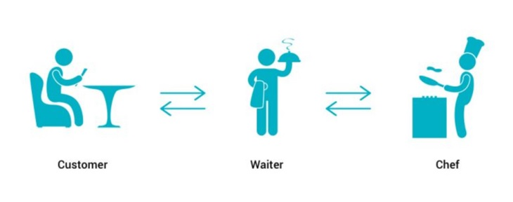
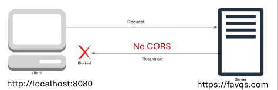
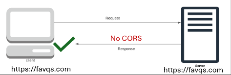
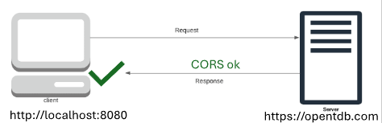
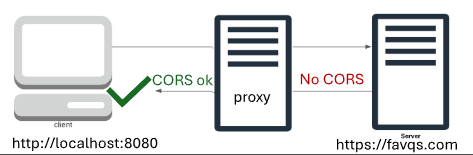

REST API
-----------------------------------
 REST: Representational State Transfer
API: Application Programming Interface
REST API is a set of rules for communicating with a server.
The URL to connect with the server must be properly formed.
1. Client: Makes a request according to the REST API rules.
2. REST API: Sends the request in a way the server understands.
3. Server: Processes the request.
4. REST API: Delivers the response (stringified object).
REST: Representational State Transfer
API: Application Programming Interface
REST API is a set of rules for communicating with a server.
The URL to connect with the server must be properly formed.
1. Client: Makes a request according to the REST API rules.
2. REST API: Sends the request in a way the server understands.
3. Server: Processes the request.
4. REST API: Delivers the response (stringified object).
REST API Analogy
-----------------------------------

1. Customer: Requests a meal from the menu.
2. Waiter: Writes the request in a way the chef understands.
3. Chef: Processes the request by cooking the meal.
4. Waiter: Responds by delivering the meal.
Trivia API
-----------------------------------
Fetch method
-----------------------------------
const promise = fetch("https://opentdb.com/api.php?amount=1");
Sends a request to the URL of the REST API.
Returns promise
Its resolve value is not a stringified object.
The resolve value is a special object created by the fetch function.
There's an extra step to access the response from the REST API.
Text method
-----------------------------------
const promise = resolveValue.text(); //fetch object
Retrieves the stringified object from the fetch object.
Returns a promise
Extracting the data
-----------------------------------
const response = JSON.parse(resolveValue);
const results = response.results;
const item = results[0];
const question = item.question;
const answer = item.correct_answer;
const incorrects = item.incorrect_answers;
Store each property one at a time until you get the data you need.
Displaying the data
-----------------------------------
output(trivia);
1. Create sample HTML of a trivia question and it's answers.
2. Converted it to a template string.
- put backticks around it
- store it in a variable
- move it to Javascript
3. Replaced with variables.
4. Output to an HTML element.
How many planets are in our Solar System?
- Nine
- Seven
- Ten
- Eight
Specifying the data
-----------------------------------
https://opentdb.com/api.php?amount=2
https://opentdb.com/api_category.php
Specify amount to get multiple questions.
Use a slightly different URL to see a list of categories and their ID.
Use the API helper to properly form a URL based on specifications.
Paste the URL into the fetch function.
Postman
-----------------------------------
An application for trying out and testing REST APIs.
The icon at the bottom left closes the History panel.
The icon at the bottom right splits the panels vertically.
Base URL
-----------------------------------
The URL where the REST API is located.
Key value pairs
-----------------------------------
They specify the data we want to request.
Key is on the left, value is on the right.
Connected with = and seperated by &
Starts with ?
FavQs - favorite quotes
-----------------------------------
https://favqs.com/api
https://favqs.com/api/quotes
Favorite quotes API documentation.
Use filter to find a word.
Use type to find a tag or author.
To use the quotes endpoint, an API key is required.
Endpoint
-----------------------------------
/qotd
A path that is appended to the base URL.
Contains data about specific resources.
Endpoint for Question of the day.
If a CORS proxy server is not used, there will be a CORS error.
API key
-----------------------------------
A unique string (or code) that grants access to a REST API.
To use some REST APIs, an API key is required.
To use an API key from FavQs.com:
1. Use the Postman app.
2. Authization tab.
3. Change the type to Bearer Token.
4. Paste API key into the token box.
API key headers
-----------------------------------
const key = "975a89d852151632954ca7a7e4a24d40";
const options = {
headers: {
Authorization: `Token token="${key}"`,
},
};
1. Create an object with authorization headers.
2. Send a request with fetch and the object.
CORS
-----------------------------------
Cross Origin Resource Sharing
Origin: The web address of the client and server.
Cross Origin: Different origins.
Resource: Data such as files and stringified objects.
Resource Sharing: Transmitting the resources.

CORS is the origin's policy for sharing resources.
Servers are supposed to tell browsers their CORS policy.
The CORS policy is a list of origins that are allowed to access the server.
Browsers block the response if the origin is not on the list.
-----------------------------------
Some servers do not specify their CORS policy.
Browsers automatically block responses from different origins.
The quotes API doesn't specify a CORS policy.
Broswers automatically block respones from the quotes API.

Postman is not a browser, so it can receive the response.
The browser can receive the response because the URL matches.
The VS Code terminal is not a browser, so it receives the response.
The browser enforces CORS.

The browser can accept respones from an API that has CORS.
The trivia API has CORS for all origins.
CORS Proxy Server
-----------------------------------

Allows the browser to receive responses from a server that does not specify CORS.
1. Accepts the request from the client.
2. Forwards the request to the API.
3. Recieves the response from the API.
4. Manipulates the response so the browser doesn't block it.
thingproxy
-----------------------------------
const proxy = "https://thingproxy.freeboard.io/fetch/";
const baseUrl = "https://favqs.com/api";
const endpoint = "/qotd";
const url = proxy + baseUrl + endpoint;
const promise = fetch(url);
A public proxy server that's free to use.
Append the API URL to the proxy URL.
https://github.com/Freeboard/thingproxy
Free APIs
-----------------------------------
https://free-apis.github.io/
A list of free APIs
Some require an API key.
Press the ? button or color codes.